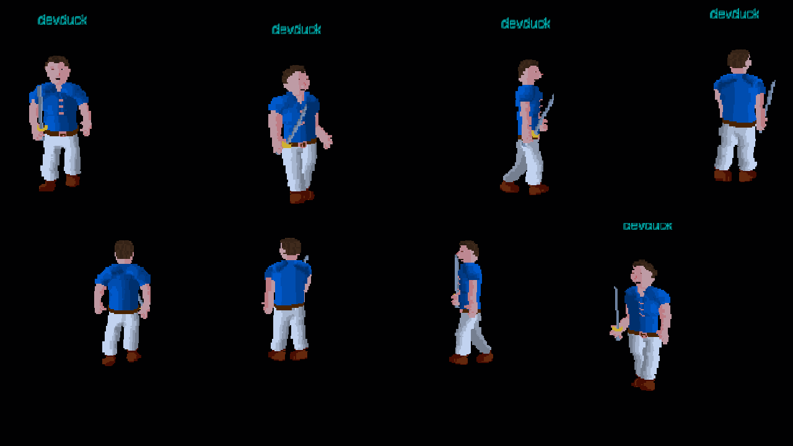
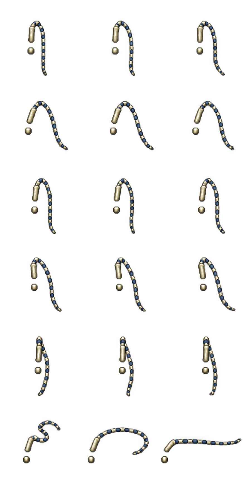

Thin, longer segmented lash. Upright split handle with space for the fist. Side view hangs forward. Three new attack poses: curled back → opening → snap.
Eight-direction orientation preview; three opposite views are mirrored as in the client. These are isolated weapon frames, not character composites. Final body occlusion still requires in-game review. Not installed.


